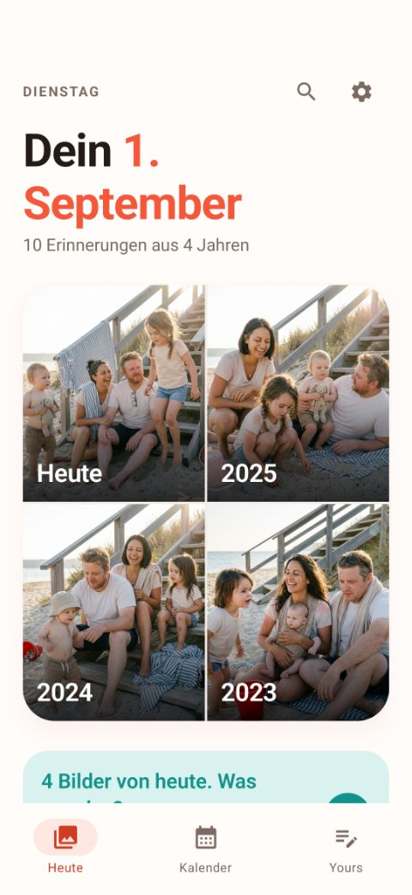
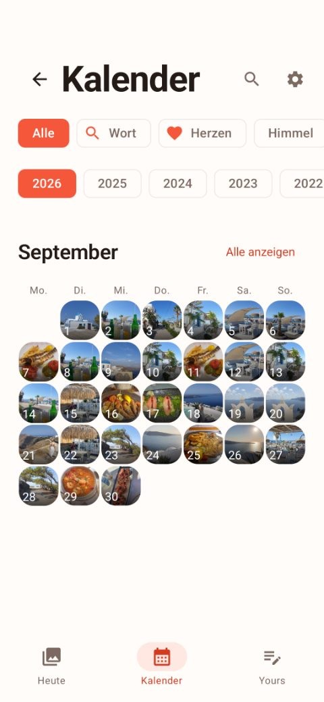
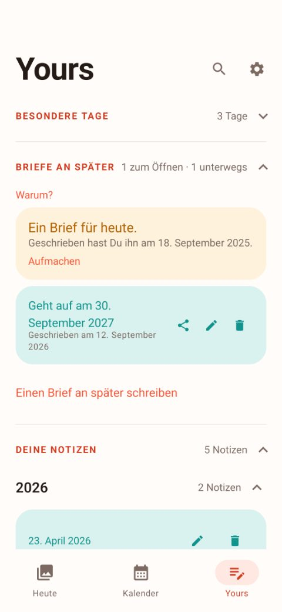

Der Versuch scheitert bei jedem nach drei Wochen — weil das leere Blatt am Abend eine Bringschuld ist. Aber jeder kann sagen, was ein Tag war, wenn ihm ein Bild davon vorgelegt wird.
Was war heute?
Ein Satz genügt. In einem Jahr wirst du froh darüber sein.
Erster Tag ohne Stützräder. Vier Meter, dann Wiese. 14. August 2025 · steht am 14. August 2026 wieder da



Jeden Morgen holt es diesen Kalendertag aus allen früheren Jahren hervor — aus deiner Fotomediathek, direkt auf dem Gerät.
Ein Satz zu heute. Getippt oder gesprochen. Auch zu Tagen, von denen es kein einziges Foto gibt.
Neben den Bildern von heute. So entsteht ein Tagebuch, ohne dass du je eines angefangen hast.
Das ist keine Einstellung, die man umlegen kann — es ist die Bauweise.
Es gibt keinen. Deine Fotos und Notizen liegen dort, wo sie entstanden sind.
Kein Konto, keine E-Mail-Adresse, kein Passwort. Die App fragt nach nichts davon.
Und keine Auswertung deines Verhaltens. Es gibt niemanden, an den etwas ginge.
Die volle Historie ist kostenlos. Was später Geld kostet, ist ein Einmalkauf.
Nachprüfbar, nicht behauptet: Yesta fordert die
Berechtigung INTERNET gar nicht erst an. Die App kann
technisch keine Verbindung ins Netz aufbauen — sie funktioniert im
Flugmodus genauso wie sonst.